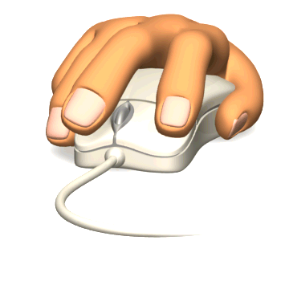

Click com o Botão Direito do Mouse
O uso mais comum para o botão direito do mouse é abrir menus de contexto, que são conjuntos de opções específicas do programa que está sendo usado. Essas opções podem variar dependendo do objeto clicado e do programa em uso.
Prática
Clique com o botão direito do mouse na imagem ao lado. Clique na opção "Abrir uma nova janela" no menu que lhe é apresentado. Na janela que se abre, clique no botão Voltar para fechar a nova janela e voltar aqui. Ainda temos muita coisa para ver.